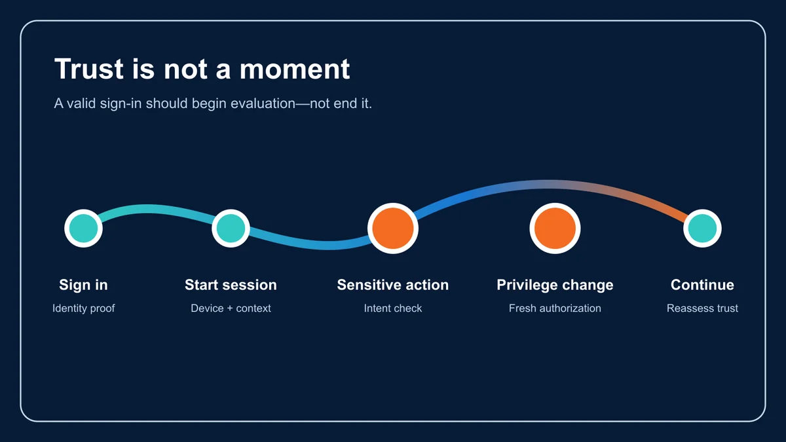
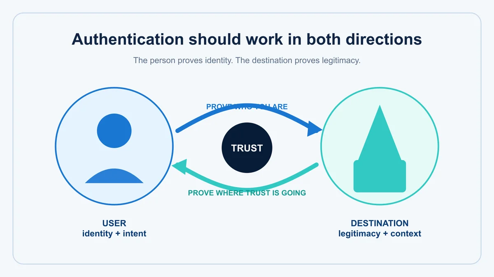
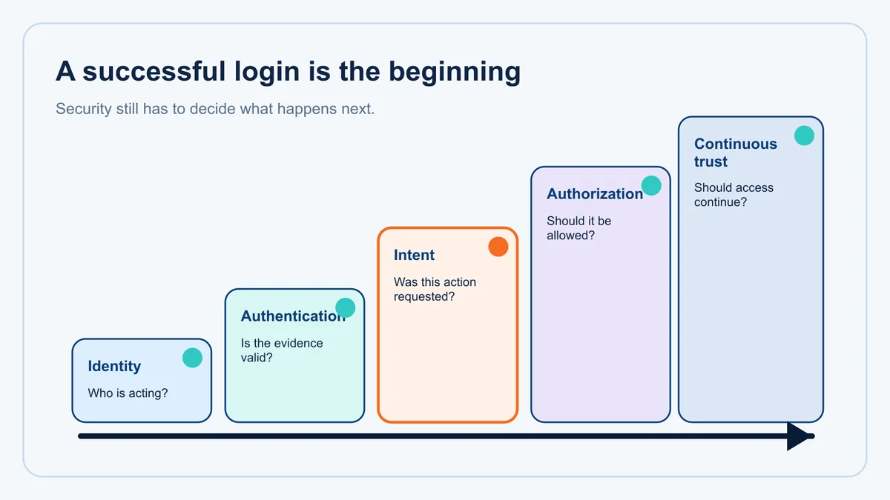

For several years, passkeys have been presented as an important answer to one of cybersecurity's most persistent problems: passwords.
And for good reason.
Passkeys replace shared secrets with public-key cryptography. They can provide strong phishing resistance, eliminate password reuse and make many familiar credential-stealing attacks considerably more difficult.
But security history teaches us something important.
Whenever we make one part of the system harder to attack, sophisticated adversaries begin looking at everything surrounding it.
That's exactly what researchers appear to be doing with passkeys.
A recent Security Boulevard article examines several pieces of research disclosed around Black Hat and DEF CON in August 2026. Collectively, the findings explored weaknesses not necessarily in passkey cryptography itself, but in the infrastructure, sessions, storage mechanisms and implementations surrounding passkeys.
That distinction matters.
The researchers didn't demonstrate that public-key cryptography suddenly stopped working.
They demonstrated something potentially more important:
A strong credential can still participate in a weak trust architecture.
And I believe that's the larger lesson security leaders should take from this research.
First, Let's Be Clear: This Is Not the Death of Passkeys
Whenever research like this appears, there's a temptation to jump to the dramatic conclusion:
"Passkeys have been hacked."
That's not what the source article says.
In fact, its conclusion is quite explicit: the underlying public-key cryptography held up. The attacks targeted the infrastructure around passkeys, including event logging, synchronized key storage and already-authenticated sessions.
That's actually what makes the research so interesting.
The credential didn't necessarily fail. The trust surrounding the credential did.
This is an important distinction because passkeys remain an important advancement over passwords and weaker forms of MFA.
Organizations shouldn't read this research and retreat to passwords.
They should read it and recognize that no credential, regardless of how strong, should be expected to solve every identity problem surrounding it.
Pass-the-Passkey: Don't Steal the Key. Steal What Happens Around It.
Security Boulevard discusses research presented by SpecterOps at Black Hat USA 2026 called "Pass-the-Passkey."
According to the article, the research encompassed three core vulnerabilities and more than 20 techniques involving Windows 11, Microsoft Entra ID, browsers and password managers.
The underlying insight is fascinating:
An attacker doesn't necessarily have to steal or break the private key if they can manipulate the systems responsible for logging, validating or relaying its use.
One exploit chain involved Windows 11 logging complete WebAuthn assertions, including cryptographic signatures and authenticator data, into Windows Event Logs.
Someone with sufficient access to a compromised endpoint could potentially obtain that information.
On its own, that's troubling.
But according to the article, researchers found that when combined with gaps in Microsoft Entra ID's server-side validation, including challenge uniqueness, session binding and signature-counter tracking, a previously captured assertion could potentially be replayed.
The result was striking:
An attacker could impersonate a privileged cloud administrator while the authentication still technically satisfied phishing-resistant MFA policy.
Microsoft patched the Windows logging vulnerability, CVE-2026-34348, in July. The article reported that some of the Entra ID validation issues remained open as of its August 24 publication.
Again, notice what happened.
The attacker didn't defeat the cryptography.
The attacker found another place where trust could be borrowed.
Then Came Pass-ta-key
The same period produced separate research from Palo Alto Networks' Unit 42 examining synced passkeys in Google Password Manager.
The attack family was called Pass-ta-key.
Its most serious variation, Golden Pass-ta-key, targeted the security domain secret protecting synced passkeys associated with a Chrome account. According to the Security Boulevard article, researchers demonstrated recovery of that 32-byte master secret from Chrome process memory.
Now consider the architectural question this raises.
One of the great advantages of moving beyond passwords is eliminating reusable centralized secrets.
But if multiple credentials ultimately depend upon another highly valuable secret, attackers simply have a new target.
We've improved the credential.
But have we eliminated the concentration of trust, or merely moved it somewhere else?
That is a question worth asking whenever we evaluate authentication architecture.
And What About the Person Behind the Keyboard?
Another piece of research highlighted in the article may be even more interesting conceptually.
Independent researcher Dirk-jan Mollema demonstrated that malware operating inside an already-authenticated Windows session could use a hardware-bound Windows Hello for Business key without requiring a fresh PIN or biometric interaction.
Think carefully about what that means.
The system knows the device.
The session has already been authenticated.
The cryptographic key is legitimate.
But there is another question:
Is the person currently causing the action still the person we intended to trust?
That's not fundamentally a cryptography question.
It's an identity, session and authorization question.
And this is where I think the industry's authentication conversation needs to become considerably broader.
The Dangerous Phrase: "Already Authenticated"

There are few phrases in cybersecurity that deserve more scrutiny than:
"The user has already authenticated."
We often treat authentication as a moment.
The person proves identity.
The system establishes a session.
The session remains valid.
Everything that happens afterward inherits the trust established at the beginning.
That model made sense when digital interactions were simpler.
It becomes increasingly dangerous when malware, session hijacking, remote access, token theft, AI agents and sophisticated automation can act within an already trusted environment.
Security Boulevard summarizes the common assumption behind the three research areas this way: a trusted session, device or synchronization mechanism can become a substitute for verifying identity.
That's the larger issue.
Authentication should establish trust. It should not create unlimited trust.
Phishing Resistance Solves an Important Problem, Not Every Problem
Passkeys are particularly valuable because properly implemented WebAuthn authentication can be phishing-resistant.
That's important.
But phishing resistance shouldn't become synonymous with complete identity security.
Imagine a house with an extraordinarily sophisticated front-door lock.
An attacker can no longer copy the key.
Excellent.
But what happens if the attacker gets inside another way?
What happens if someone leaves a trusted session open?
What happens if the mechanism storing the keys becomes compromised?
What happens if account recovery is socially engineered?
What happens if malware can cause an authenticated device to perform an action?
What happens if the person legitimately authenticates but the action being authorized isn't actually what they intended?
The lock can perform perfectly while the house is still compromised.
Security architecture has to protect the relationship, not merely the credential.
This Is Where Intent Becomes Important
One of the SpecterOps techniques described by Security Boulevard involved malware generating repeated credential prompts until a user eventually approved one.
Does that sound familiar?
It should.
We have already seen the same human vulnerability exploited through MFA fatigue and push bombing.
The authentication technology changes.
The attacker continues targeting the person.
This reveals an important distinction between authentication interaction and authentication intent.
A person may deliberately press a button, enter a PIN or provide a biometric.
But did that person actually request the underlying authentication session?
Those aren't necessarily the same question.
Imagine you're sitting at your desk and suddenly receive an authentication request.
You approve it.
Technically, you interacted with the authenticator.
But perhaps you never initiated the session.
The important security question isn't merely:
"Did you approve this?"
It is:
"Did you request this?"
That's a much richer expression of intent.
NIST Is Already Moving in This Direction
This broader interpretation of authentication isn't happening in isolation.
The latest NIST Digital Identity Guidelines, SP 800-63B-4, place significant emphasis on phishing resistance, replay resistance, authentication intent, verifier authentication and protected cryptographic keys.
At AAL2, NIST requires verifiers to offer at least one phishing-resistant authentication option. At AAL3, phishing resistance and authentication intent are required.
This direction is significant.
The industry is moving beyond:
How many factors did the user provide?
Toward:
What evidence do we actually have that this authentication relationship should be trusted?
That's progress.
But the new passkey research suggests that we need to continue pushing that conversation further.
The Identité® Perspective: Authentication Is a Relationship

This is where the philosophy behind our work at Identité® becomes relevant, but I don't believe this should be framed as "passkeys versus Identité."
That would miss the point.
Passkeys solve important problems.
FIDO/WebAuthn provides strong protections, including phishing-resistant authentication and verifier binding.
The more interesting question is:
What other trust relationships need to be established around strong authentication?
That's where we think about authentication differently.
Our patented Full Duplex Authentication® architecture is built around bidirectional trust:
User ↔ Legitimate Destination
But destination legitimacy is only part of the larger model.
We also believe modern authentication needs to consider:
Identity + Authentication + Destination + Intent + Context + Authorization
Why?
Because the credential can be legitimate while the session is compromised.
The user can be legitimate while the requested action is fraudulent.
The device can be trusted while malware is operating within it.
The authentication can succeed while the user never intended the underlying interaction.
And an authenticated identity can still possess more authority than the situation warrants.
Successful authentication is evidence of trust. It should not be the end of the trust decision.
Decentralization Matters Too
The research involving synchronized passkeys raises another architectural question that deserves attention:
Where does the valuable secret live?
Any centralized or highly concentrated repository of sensitive material can become an attractive target.
This is one reason we've long believed in decentralized biometric verification and keeping private authentication material within trusted user environments rather than creating centralized repositories wherever possible.
The principle extends beyond biometrics.
If compromising one secret, service or synchronization mechanism can expose many identities or credentials, attackers gain leverage.
Security architecture should strive to reduce that leverage.
The objective isn't simply making secrets difficult to steal. It's reducing what an attacker gains when something inevitably goes wrong.
Authorization Is the Next Conversation

Suppose an attacker manages to operate inside an authenticated session.
What happens next?
Can the session view email?
Reset credentials?
Change payment instructions?
Create an administrator?
Transfer money?
Export customer information?
Register another authentication device?
The answer depends on authorization.
And this is where risk should begin driving friction.
Reading a document might require little additional assurance.
Changing privileged access should require more.
Approving a multimillion-dollar transaction should require considerably more.
Replacing an authentication device may deserve explicit identity verification and intent.
Authentication opens the door. Authorization determines which rooms you may enter and what you may do once you're there.
The more consequential the action, the less comfortable we should be relying solely on trust inherited from an earlier authentication event.
Don't Throw Away Passkeys. Throw Away the Finish-Line Mentality.
Security Boulevard's article makes a recommendation I strongly agree with:
Organizations shouldn't treat "we deployed passkeys" as the finish line.
Exactly.
Nor should we treat passwordless as the finish line.
Or MFA.
Or biometrics.
Or Zero Trust.
Cybersecurity gets into trouble whenever we turn an important control into a declaration of victory.
Passkeys substantially improve authentication.
That should be celebrated.
Now researchers are showing us where the surrounding architecture can still fail.
That should be welcomed too.
Because that's how security evolves.
The Attacker Will Always Look for the Trust We Forgot to Question
The most important lesson from this research isn't that passkeys failed.
It's almost the opposite.
The cryptography held, so researchers attacked the assumptions around it.
That's exactly what sophisticated attackers do.
If they cannot steal the password, they'll steal the token.
If they cannot steal the token, they'll hijack the session.
If they cannot defeat the authenticator, they'll manipulate the user.
If they cannot copy the private key, they'll attack its storage or invocation.
If they cannot impersonate the user, they'll impersonate the destination.
And if all of that fails, they'll look for someone or something already trusted and try to operate through it.
Which brings us back to the larger question I've been asking throughout much of my writing:
What happens when our security controls trust the wrong identity, destination, session or action?
Passkeys are an important part of the future of authentication.
But the future cannot simply be about creating an increasingly difficult credential to steal.
It has to be about establishing a relationship that is increasingly difficult to counterfeit.
Because attackers don't have to defeat every security control.
They only have to become someone, or something, those controls have been taught to trust.
And the next evolution of authentication will be determined by how difficult we make that trust to borrow.
Read the original Security Boulevard article